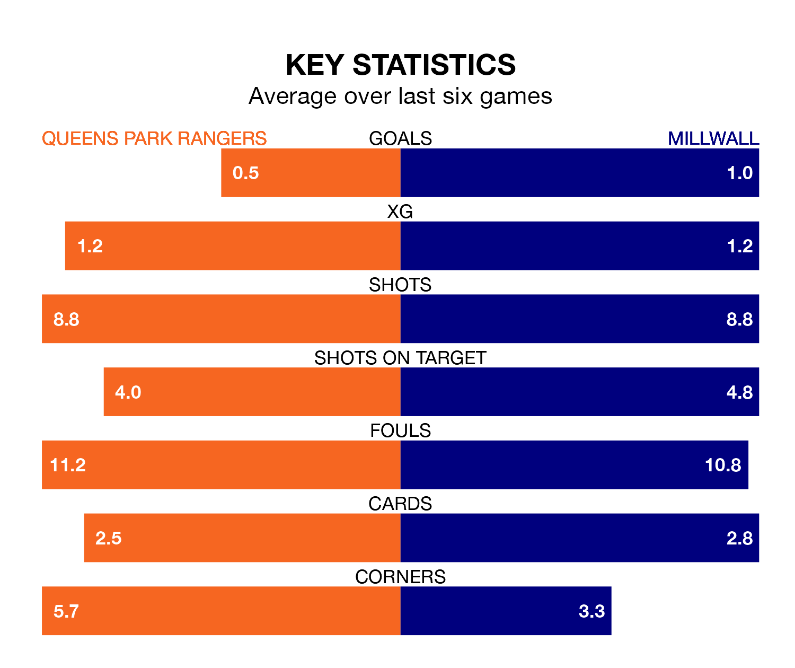

Queens Park Rangers are on a terrible run ahead of hosting Millwall at Loftus Road on Saturday, with just one point collected from their last six games.
QPR have picked up just one draw in their last six EFL Championship games, and face a Lions side whose last six games have brought three wins and two draws.
QPR are 23rd in the table after 27 games, of which they have won five and drawn six, earning 21 points.
Millwall are seven places ahead of Rangers in 16th, with eight wins and eight draws putting them on 32 points.
In the last 10 years, QPR and Millwall have played each other on 14 occasions. QPR won five of them, Millwall four, and they drew five times.
On average, QPR scored 1.4 goals and the Lions 1.3 in those matches.
Their last meeting was on December 26, when Millwall won 2-0 at home.
With 22 goals in 27 games so far this season, the home team are the league's second-lowest scorers with 0.8 goals per game. And they are conceding at an average rate, letting in 39 goals at a rate of 1.4 per game.
The Lions are also below average scorers, with 1.1 goals per game, compared to a league average of 1.4. They have conceded 1.3 goals per game.
QPR's last match was on Sunday, a 2-1 loss against Watford, with Lyndon Dykes getting the goal for QPR.
Millwall lost 3-1 against Middlesbrough last time out, on Saturday, with Joe Bryan on the scoresheet.
Saturday's match will be refereed by Robert Madley, who has taken charge of 12 EFL Championship games so far this season, issuing four red cards and booking 64 players. He has awarded two penalties.
He is yet to oversee a match featuring either QPR or Millwall this season.
Updated: 13:09 (UTC), 17/01/24